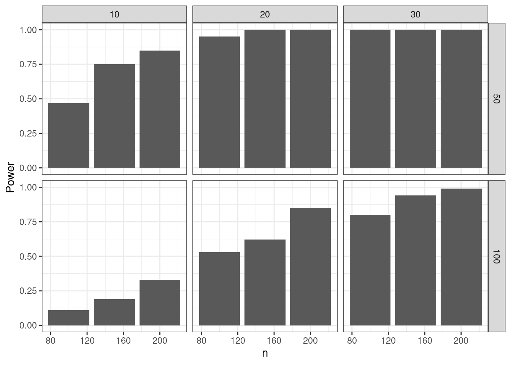

## Set up parameters
ns <- c(100L, 150L, 200L)
mean_diffs <- c(10, 20, 30)
sds <- c(50, 100)
reps <- 10L
## Bring together into data frame
results_template <- expand.grid(
n = ns,
mean_diff = mean_diffs,
sd = sds,
p.value = NA_real_
)
base_r_sim <- results_template[rep(1:nrow(results_template), each = reps), ]
## Loop over rows of the data frame and calculate the p-value
for (i in 1:nrow(results_template)) {
params <- base_r_sim[i,]
pre <- rnorm(params$n, 0, params$sd)
post <- pre + rnorm(params$n, params$mean_diff, params$sd)
base_r_sim$p.value[i] <- t.test(pre, post)$p.value
}
## Display table output
DT::datatable(base_r_sim)Setting up simulations in R
List of packages for data simulation
How to choose ?
- Number of dependencies
- Number of reverse dependencies
- Date of latest commit
- Date of last release
- Is it on CRAN or only on Github?
- Who developed it?
- Philosophy
| Version | Number of dependencies | Number of reverse dependencies | Date of latest commit | Date of latest release | Documentation quality | On CRAN? | Developers | |
|---|---|---|---|---|---|---|---|---|
| DeclareDesign | 1.0.10 | 2 | 1 | 2024-04-13 | 2024-04-21 | Yes | Graeme Blair | |
| MonteCarlo | 1.0.6 | 6 | 0 | 2019-01-31 | 2019-01-31 | Yes | Christian Hendrik Leschinski | |
| simChef | 0.1.0 | 22 | 0 | 2024-03-20 | NA | No | Tiffany Tang, James Duncan | |
| simEngine | 1.4.0 | 6 | 0 | 2024-04-13 | 2024-04-04 | Yes | Avi Kenny, Charles Wolock | |
| simpr | 0.2.6 | 11 | 0 | 2024-07-16 | 2023-04-26 | Yes | Ethan Brown | |
| simulator | 0.2.5 | 1 | 0 | 2023-02-02 | 2023-02-04 | Yes | Jacob Bien |
simpr
Problem
- Study: Pre-post comparison of the “Triglicious” intervention;
- Research question: Did Triglicious improve students’ math scores?
- Method: Paired t-test
Usual base R solution
What simpr author advocates is bad:
- Most important pieces (data generating process, model specification, definitions, varying parameters) are hidden;
- What if there is an error?
- What about parallelization?
- Is this code sufficiently readable? Without the comments?
Solution via simpr
## Specify pre and post scores that differ by a given amount
specify(
pre = ~ rnorm(n, 0, sd),
post = ~ pre + rnorm(n, mean_diff, sd)) |>
## Define parameters that can be varied
define(n = 100, mean_diff = 10, sd = 50) |>
## Generate datasets
generate(100) |>
## Fit datasets
fit(t = ~t.test(post, pre, paired = TRUE)) |>
## Collect results
tidy_fits() |>
DT::datatable()A complete solution with varying parameters
sim_vary <- specify(
pre = ~ rnorm(n, 0, sd),
post = ~ pre + rnorm(n, mean_diff, sd)
) |>
define(
n = c(100, 150, 200),
mean_diff = c(10, 20, 30),
sd = c(50, 100)
) |>
generate(100, .progress = TRUE) |>
fit(t = ~t.test(post, pre, paired = TRUE)) |>
tidy_fits()
sim_vary |>
dplyr::group_by(n, mean_diff, sd) |>
dplyr::summarize(Power = mean(p.value < 0.05)) |>
ggplot(aes(n, Power)) +
geom_col() +
facet_grid(rows = vars(sd), cols = vars(mean_diff)) +
theme_bw()`summarise()` has grouped output by 'n', 'mean_diff'. You can override using
the `.groups` argument.
Philosophy
The simpr workflow, inspired by the infer package, distills a simulation study into five primary steps:
specify()your data-generating process;define()parameters that you want to systematically vary across your simulation design (e.g. n, effect size);generate()the simulation data;fit()models to your data (e.g.lm());tidy_fits()for consolidating results usingbroom::tidy(), such as computing power or Type I Error rates.
Reproducible workflows
- Same seed, same results;
- Can regenerate just a specific subset to see what happened in that particular dataset or fit;
- Useful in debugging and diagnosing unexpected results, etc.
Filtering full simulation
set.seed(500)
specify(a = ~ runif(6)) |>
generate(3) |>
dplyr::filter(.sim_id == 3)full tibble
--------------------------
# A tibble: 1 × 3
.sim_id rep sim
<int> <int> <list>
1 3 3 <tibble [6 × 1]>
sim[[1]]
--------------------------
# A tibble: 6 × 1
a
<dbl>
1 0.371
2 0.959
3 0.633
4 0.177
5 0.803
6 0.133Simulate subset only
set.seed(500)
specify(a = ~ runif(6)) |>
generate(3, .sim_id == 3)full tibble
--------------------------
# A tibble: 1 × 3
.sim_id rep sim
<int> <int> <list>
1 3 3 <tibble [6 × 1]>
sim[[1]]
--------------------------
# A tibble: 6 × 1
a
<dbl>
1 0.371
2 0.959
3 0.633
4 0.177
5 0.803
6 0.133Benchmarking
set.seed(500)
bench::mark(
all = specify(a = ~ runif(6)) |>
generate(1000) |>
dplyr::filter(.sim_id == 1000),
subset = specify(a = ~ runif(6)) |>
generate(1000, .sim_id == 1000),
check = FALSE, min_iterations = 10L, relative = TRUE
)Warning: Some expressions had a GC in every iteration; so filtering is
disabled.# A tibble: 2 × 6
expression min median `itr/sec` mem_alloc `gc/sec`
<bch:expr> <dbl> <dbl> <dbl> <dbl> <dbl>
1 all 56.8 59.3 1 1 1
2 subset 1 1 55.9 1.28 1.19Other features
Data munging
Add per_sim() |> after generate() in your simulation pipeline and then any tidyverse function that will apply to every simulation dataset:
specify(
pre = ~ rnorm(n, 0, sd),
post = ~ pre + rnorm(n, mean_diff, sd)
) |>
define(
n = c(100, 150, 200),
mean_diff = c(10, 20, 30),
sd = c(50, 100)
) |>
generate(1000, .progress = TRUE) |>
## Apply tidyverse functions to every simulation dataset
per_sim() |>
## Mutate to add a range restriction
dplyr::mutate(dplyr::across(dplyr::everything(), dplyr::case_when(
pre > 100 ~ 100,
pre < -100 ~ -100,
.default ~ pre
))) |>
fit(t = ~ t.test(post, pre, paired = TRUE)) |>
tidy_fits()
Error handling
- Can change error handling to keep going with simulation, stop simulation, or to skip warnings;
- Debug and recovery options to enter into simulation during error.
Built-in parallelization
Just add
library(future)
plan(multisession, workers = 6) # or however many cores are reasonable to useand your simulation pipeline (actually the generate() function) will run in parallel.